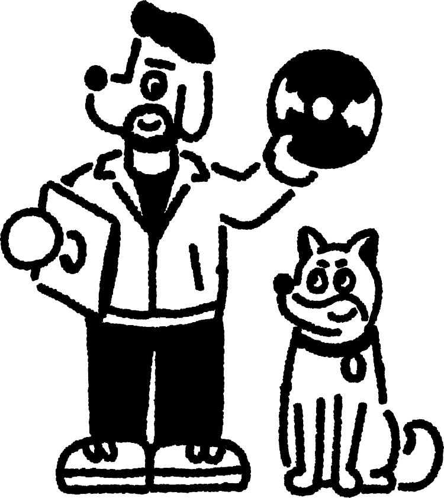

Gatefold ondersteunt onafhankelijke artiesten en labels. Release je independent en zoek je een ervaren team om je releases professioneel en effectief uit te rollen? Wij helpen je met strategie, uitvoering en support op maat.
Meer info
Van eerste idee tot post-release: wij helpen je een volledige release campagne maken én uitvoeren.
We zorgen dat alles op tijd en correct wordt aangeleverd, inclusief metadata en assets. Wij delen de plannen en assets met de distributeur zodat zij op de hoogte zijn.
We optimaliseren je profiel en pitchen je muziek gericht bij de juiste editorial teams.
Wij adviseren over externe partners zoals PR, plugger, fysiek/vinyl, content creators, out of home & digital marketing en nemen de leiding in het contact met deze partijen.
We denken mee over branding, positionering en het bouwen van een duurzame carrière.
Voor labels die hun A&R zelf doen, maar behoefte hebben aan een sterke partner voor de uitrol van hun releases. Projectmatig of doorlopend.
Maak impact met een lokaal team en netwerk. Internationale labels en artiesten kunnen bij Gatefold terecht voor het opzetten en uitrollen van een lokale campagne.
Of het nu gaat om een single release, een albumcampagne of een langdurig ontwikkeltraject; we bieden ondersteuning die past bij waar jij staat in je carrière. Jij vertelt waar je hulp bij nodig hebt, wij laten zien hoe we kunnen ondersteunen.
Meer infoKlaar voor een impactvolle release? Neem contact op voor een kennismaking.